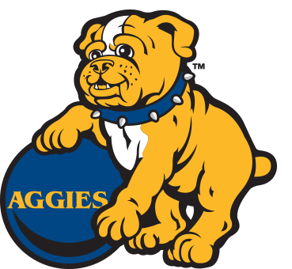

NCAT Improvements
Improvements
Welcome to the Improvements section of the RateNCAT. In this section you are able to leave improvements on what NCAT can do to make the school better. Please be respectful when typing these improvements.